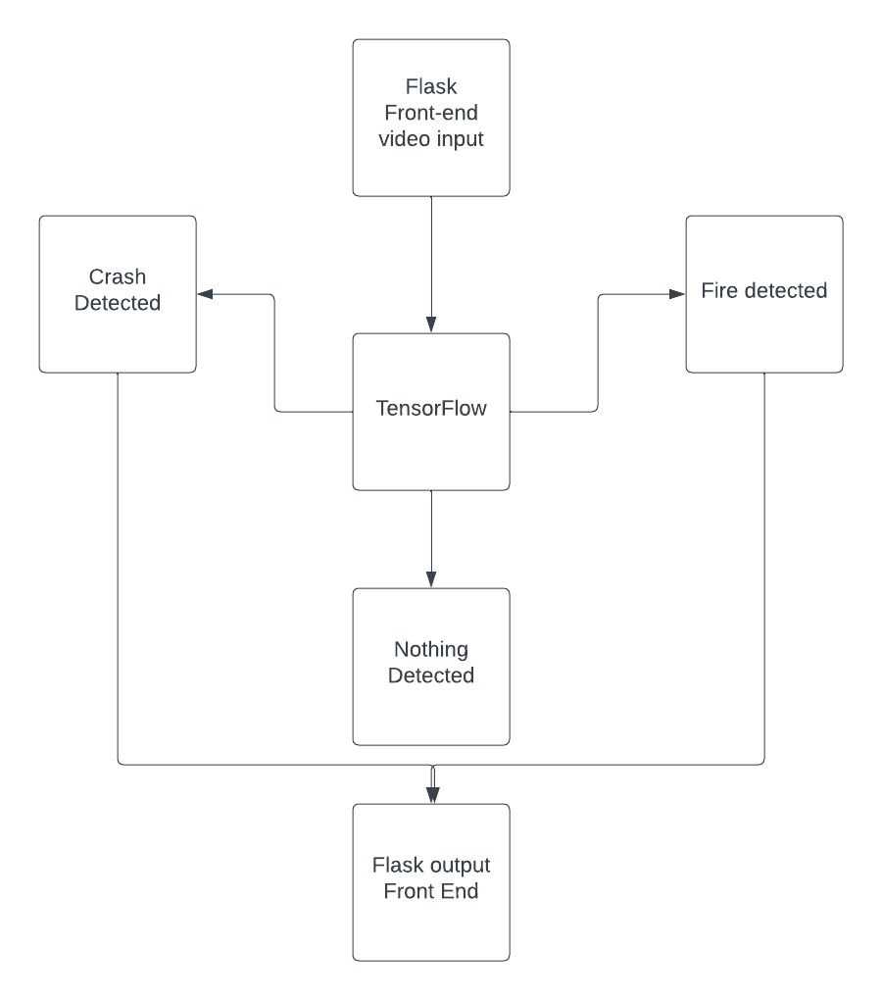

DriveSafeAI
The main motive of the project is to detect an accident the moment it takes place so that help can be sent as
soon
as possible.The concept is to use AI to tell if an accident has occurred or if a car has caught on fire.If any
accident or fire is detected the program will send information to the authorities for requesting help.
The Concept
- The integration of Artificial Intelligence, TensorFlow, and Flask in our project demonstrates the power
of AI in automating the detection of vehicle incidents.
- By leveraging AI algorithms and advanced frameworks, we have developed a cutting-edge solution that
contributes to the enhancement of road safety and emergency response.
- Our project represents the future of AI-driven technologies in ensuring prompt detection and efficient
handling of vehicle incidents, ultimately minimizing potential risks and improving overall
transportation safety.

Solving the Problem
-
By leveraging the capabilities of TensorFlow and Flask, we have created a dynamic web application. Our
app
analyzes videos, employing computer vision techniques to identify instances of vehicle fires and
crashes.
-
Our application serves as a powerful tool in enhancing safety and security within the transportation
sector.
With its real-time capabilities and accurate detection, it has the potential to save lives and minimize
property
damage.
-
Our project encompasses and promotes several Sustainable Development Goals (SDGs), highlighting its
profound
societal impact and contribution to a sustainable future:
-
Goal 3: Good health and well-being
-
Goal 9: Industry, innovation, and infrastructure
-
Goal 12: Responsible consumption and production